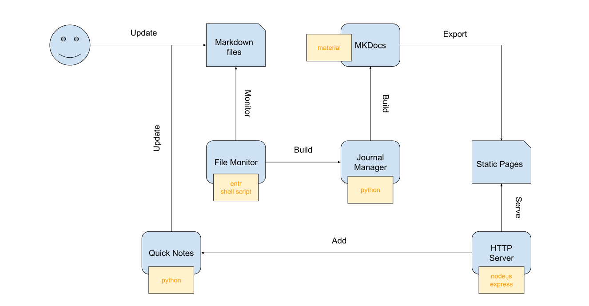
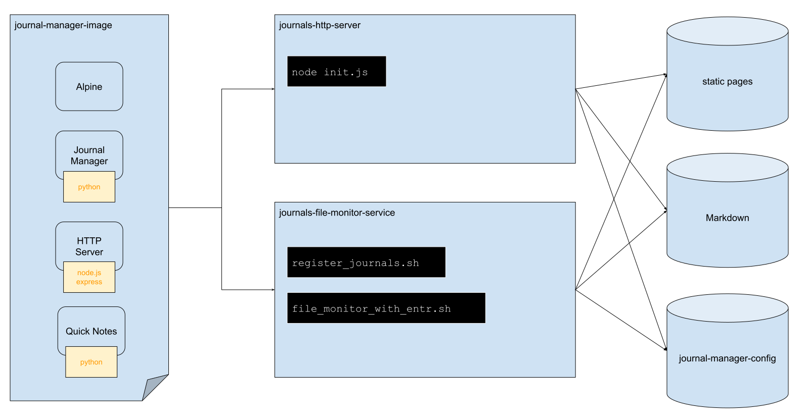

Setup a personal journals server
In this tutorial we are going to setup a server to host markdown journals created with journal-manager + quick-notes template.
Overview

The user will update markdown files directly or through the addition of quick-notes. A file-monitor service will monitor the journal markdown files and it will activate a build if any file is updated. The build is done via the journal-manager application that internally also calls the build command of mkdocs. The result of this build is a set of static-pages that is served by a nodejs http-server implementing the quick-notes API as defined in our tutorial Setup quick-notes template.
Setting up docker services
We are going to create two docker services (journals-http-server and
journals-file-monitor-service) instantiated from the same docker image
(journal-manager-image).

Below we define the Dockerfile for the journal-manager-image. It is based
on the lightweight alpine unix distribution.
FROM alpine:3.14
RUN apk add --update --no-cache \
bash \
python3 \
py3-pip \
nodejs \
npm \
entr \
gcc \
python3-dev \
musl-dev
WORKDIR /journals
COPY scripts/init-stage/install-journal-manager /journals/scripts/init-stage/install-journal-manager
COPY templates /journals/templates-temp/
ENV JOURNAL_MANAGER_CONFIG_FOLDER="/journals/.config/journal-manager"
RUN /journals/scripts/init-stage/install-journal-manager/install-journal-manager.sh
COPY http-server/ /journals/http-server/
RUN cd http-server && npm install
COPY scripts/execution-stage /journals/scripts/execution-stage
# Fix file watcher on Mac (see: https://github.com/eradman/entr/issues/3)
ENV ENTR_INOTIFY_WORKAROUND 1
# ENTRYPOINT ["scripts/execution-stage/monitor-files/monitor-files.sh"]
ENTRYPOINT ["scripts/execution-stage/start-script/start-script.sh"]
Notice that we have one active and one commented entrypoint. Each entrypoint will
define a service that we will setup in a docker-compose.yml. Before that, let us
define some of the helper scripts.
#! /usr/bin/env bash
#file: install-journal-manager.sh
SCRIPT_PATH="$( cd "$(dirname "${BASH_SOURCE[0]}")" && pwd)"
PROJECT_PATH="${SCRIPT_PATH%install-journal-manager*}install-journal-manager"
INPUT_FOLDER="${SCRIPT_PATH}/input"
OUTPUT_FOLDER="${SCRIPT_PATH}/output"
mkdir -p "${OUTPUT_FOLDER}"
journal-manager setup init --default-journal-folder "/journals/journals-files" --default-template-folder "/journals/templates"
journal-manager template register quick-notes "/journals/templates-temp/quick-notes"
rm -rf "/journals/templates-temp"
#! /usr/bin/env bash
#file: start-script.sh
SCRIPT_DIR="$(cd "$(dirname "${BASH_SOURCE[0]}")" && pwd)"
PROJECT_DIR="${SCRIPT_DIR%journals/*}journals"
pushd "${PROJECT_DIR}" > /dev/null
node "http-server/init.js"
popd > /dev/null
#! /usr/bin/env bash
#file: monitor-files.sh
SCRIPT_PATH="$( cd "$(dirname "${BASH_SOURCE[0]}")" && pwd)"
PROJECT_PATH="${SCRIPT_PATH%/journals/*}/journals"
INPUT_FOLDER="${SCRIPT_PATH}/input"
OUTPUT_FOLDER="${SCRIPT_PATH}/output"
mkdir -p "${OUTPUT_FOLDER}"
while true
do
echo "Directory has changed. Building index page."
"${PROJECT_PATH}/scripts/execution-stage/build-index-page/build-index-page.sh"
find "${PROJECT_PATH}/journals-files" -type f | entr -n -d "${PROJECT_PATH}/scripts/execution-stage/rebuild-modified-journals/rebuild-modified-journals.sh" /_
done
We are not going to show all the files defined in the project, but you can clone its dedicated git repository:
journal-manager-server and modify them at your convenience.
There you are going to find a nodejs http-server that implements the quick-notes API and the remaining helper
scripts.
The last essential file is the docker-composer.yml.
version: "3.9"
services:
journals-file-monitor:
build:
context: journal-manager-service/image
container_name: journals-file-monitor
volumes:
- type: bind
source: my-journals-files
target: /journals/journals-files/
- type: bind
source: my-journals-site
target: /journals/site/
- type: volume
source: journals-config
target: /journals/.config
entrypoint:
- "scripts/execution-stage/monitor-files/monitor-files.sh"
depends_on:
- "journals"
journals:
build:
context: journal-manager-service/image
container_name: journals
ports:
- "1234:80"
volumes:
- type: bind
source: my-journals-files
target: /journals/journals-files/
- type: bind
source: my-journals-site
target: /journals/site/
- type: volume
source: journals-config
target: /journals/.config
labels:
- "traefik.enable=true"
- "traefik.http.routers.journals.rule=Host(`my-domain.com`)"
- "traefik.http.routers.journals.entrypoints=web"
- "traefik.http.services.journals.loadbalancer.server.port=80"
depends_on:
- "traefik"
traefik:
image: traefik:v2.6
container_name: traefik
command:
- "--api.insecure=true"
- "--providers.docker=true"
- "--providers.docker.exposedbydefault=false"
- "--entrypoints.web.address=:80"
restart: unless-stopped
ports:
- "80:80"
volumes:
- /var/run/docker.sock:/var/run/docker.sock
volumes:
journals-config: